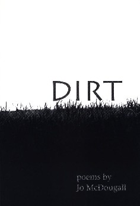

‚Üê Back to MarckBeggs.com | Arkansas Literary Forum archive, preserved as originally published‚Üê Back to MarckBeggs.com | Arkansas Literary Forum archive, preserved as originally published
‚Üê Back to MarckBeggs.com | Arkansas Literary Forum archive, preserved as originally published‚Üê Back to MarckBeggs.com | Arkansas Literary Forum archive, preserved as originally published|
Dirt, by Jo McDougall
 Available in Little Rock at Lorenzan's and Wordsworth's Bookstores.
After growing up on a rice farm in the Arkansas Delta and spending half her adult life as a farm wife, Jo McDougall returned to the University of Arkansas at Fayetteville for an MFA. She has taught creative writing in Arkansas, Louisiana, and Kansas. She now lives in Little Rock with her husband, who is not only supportive of her writing, but also serves as her first reader and critic. Jo McDougall has been the recipient of the John Ciardi Fellowship, three fellowships to The MacDowell Colony, and awards from the Academy of American Poets and the DeWitt Wallace/Reader's Digest Foundation, as well as the 2000 Arkansas Porter Prize. Dirt is her fourth book of poetry. It has been nominated for a Pulitzer Prize. The most noticeable feature of this book is the frequent use of striking images, such as:
and my favorite, describing a woman leaving after her lover tells her the relationship is over:
This collection of poems resonates with more depth of both meaning and emotion, and with a more serious tone, than her previous volumes, especially in the first section, which reflects the poet's impressions as she experiences her daughter's critical illness and death from cancer (Interview, 1999). While it is usually unwise to assume the identity of an unnamed narrator of a poem, in this case the roles of poet and narrator coalesce. The emotion, though muted, is genuine. For example, the title poem begins:
Not all is somber, however. Halfway through this first section, the poignancy of the poet/narrator's grief is offset by the affirmation of life:
In contrast to the strong emotion of the grief poems, the potential nostalgia of returning to the house she grew up in, to her 'old room,' is avoided by the objectivity of the narrator's observations:
McDougall has been described both as a Southern writer, and as a Midwestern writer. In Dirt, however, the sense of place is less apparent than the sense of the universality of the human experience reflected in the poet's journey through her daughter's illness, a sense that spills over into the poems with themes other than this journey. There are still place names-New Orleans, Memphis, Kansas, Cabot. But the overall impression remains one of the commonality of human experience, rather than the particularity of life in a geographic area, although the poems do all seem to belong in America. (For discussion of the author as a Southern writer, see "Jo McDougall: From Farm Wife to Poet -- Metamorphosis of a Southern Writer," in Arkansas Literary Forum, 2000.) Like her earlier books, this volume contains quirky characters ("Holes"; "Scorch"); folklore ("Hett Mayhew Explains Why Belton Harris Keeps His Sister Gladys Inside"); the circus ("What We Need"); a touch of magical realism ("Intersection"; "Gratitude"); and in most of the poems, a story. Fans of Jo McDougall will find this book rewarding. Those who have
not previously discovered her work will find it a good read, and a good
place to begin. |